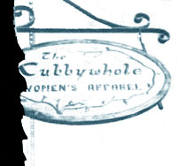

If you now operate-or ever operated-a successful home business that was inspired by an article you read in MOTHER, tell us (in 500 words or less) when and where-and with how much "seed money"-you started your venture. Because if your story can be fitted into an upcoming installment of BOOTSTRAP BUSINESSES, you'll receive (1] the warm satisfaction of knowing that you helped someone else find the happiness you enjoy and PI a free two-year new or renewal subscription to ME MOTHER EARTH NEWS'.
One day last year I attended an arts and crafts show ... and-after viewing the large variety of handmade items on display-[ began to think about selling my own handicrafts. After all, I'd been crocheting Christmas, wedding, and baby presents for friends and relatives for quite some time! ... so, I figured, why not use my skill to make some extra money?
That same week-while still toying with my business idea-I read MOTHER for the first time me ... a& Were in &we No. 52 on page 36, was a piece entitled "How to Go to Work for Yourself". I read it and reread it ... and finally decided to follow the article's advice. So, I registered with the tax department (at a cost of $1.00), invested $25 in a set of business cards, spent $75 on a supply of yarn ... and began crocheting! (I even used my vast mounds of leftover yarn to create a variety of multicolored vests, afghans, and the like.)
Within just a few months I had a large enough stock of clothing and gift items to really start business. My work had been displayed at three arts and crafts shows and I was beginning to create my own designs (some of which were submitted to needlework magazines). I'd been working steadily on custom orders (as a result of a commission to sell on consignment at a local gift shop) and-after having an article accepted by Crochet World-I'd even been asked to do a regular column for that publication!
Each craft show has earned me approximately $45 per day, my custom orders have proved even more profitable, and I have a future steady paycheck from Crochet World coming my way. Sure, it may take some time for my business to make its first million, but-meanwhile-I'm sure having fun getting paid for my hobby!
Barbara A. Chojnacki
Pawcaluck, Conn.
After living in suburbia for most of our lives, my family and I finally bought a piece of country land and began construction of a home. That undertaking required quite a bit of cash, though, so we soon found ourselves kicking around a number of moneymaking ideas.
At first we tried out a basement-cleaning/ junk-hauling business ("I Pick Up Profits From a Pickup", MOTHER NO. 32, page 24) ... a venture that provided us with numerous fringe benefits. (The most abundant of such gratuities were scrounged items that had either been thrown away or left behind ... many of which became building materials for the 40-foot geodesic dome we were constructing.) Our enterprise also provided-on the average-a fairly good income, but it quickly became clear that the earnings were not steady enough to meet our needs.
As it turned out, however, I'd acquired quite a few woodworking implements from those hauling jobs including a saber saw and a Skilsaw -and I'd paid about $100 for a router and a few assorted bits to round out my tool supply. The router had already had a couple of trial runs ... first at the request of a friend who needed a sign with his name carved on it, and several more times when (after I noted how well my first attempt at the craft had turned out) I produced a few placards as gifts. Shortly thereafter I read "Dimensional Wood Signs ... How to Make 'Em and Sell 'Em", Parts I and II in Issue No's. 36 (page 72) and 37 (page 74) respectively, as well as the addendum in No. 38 (page 30) ... and I knew-without a doubt that I could turn my hobby into a profitable venture.
At first business was rather slow ... but my family took on a variety of small woodworking jobs-in addition to an occasional junk hauling gig-and somehow we managed to survive. Then my skills began to improve, my reputation spread, and I was being commissioned to build signs for organizations (including a series for the local chamber of commerce) and individuals alike. As my enterprise expanded, so did my assortment of appliances ... and before long "Signs by Harry" could produce just about every type of placard imaginable and had grossed $7,500 in its first 12 months (this year I expect to double that amount!).
My family and I put plenty of hard work into our home sign business, but none A our good fortune would ever have come to pass if it hadn't been for THE Mother Earth News'. In fact, I still often refer to Wow first sign craft articles to help me along in the course of my workday. And-every other month-I eagerly anticipate the arrival of the latest issue of MOTHER ... wondering what new do-it-yourself idea she'll involve me in next!
Harry Klaus
White Cloud, Mich.
I belong to a food coop in Middle town , Connecticut that not only sells the best natural foods around ... but also boasts a magazine/book section and a free lending library. Therefore, THE Mother Earth News' is readily available to me and-as a result-I've had quite a bit of help from MOM over the Years ... particularly in setting up home businesses.
Back in Issue No. 36 (page 101), for example, MOTHER ran an article called "Yes, Virginia, There Is a Free Lunch ... It's Called the Solar Greenhouse!" After reading that piece, I promptly built myself a "hothouse" (largely from free, recycled materials) ... and began selling organic produce to the Middletown Co-op. (The greenhouse expanded my growing season and provided me with enough surplus fruits and vegetables to bring in quite a nice profit.)
Shortly thereafter I stumbled upon a write-up called "Sprouts Fill Our Pockets With Cash" (MOTHER NO. 54, page 64), and I immediately added sprouts to the kinds of produce I was selling to the co-op and to local restaurants. I planted the shoots in little "greenhouses"plastic shoe boxes with lids-and delivered them still growing in their containers to my customers. (Alfalfa sprouts-plus a blend of alfalfa, crimson clover, radish, and fennel-became my specialties.)
Business proceeded fairly well for some time, and then one day I discovered a MOTHER article entitled "How to Start a Home Bakery of Your Own" (issue No. 37, page 46). 1 realized that the establishments that bought my organic veggies would be likely candidates for the purchase of homebaked goods, as well ... and that such a project would be a convenient way of bringing in a little extra money. So I invested a few dollars in some pans and fresh-ground flour, and set out to bake a passel of whole-grain loaves. Before long I started playing around with some recipes of my own: I came up with a few unusual varieties of bread such as carobraisin-cinnamon-whole-wheat-and then sales really began to pick up. (One-and-a-half-pound loaves of my novel recipe-which cost me 404 apiece to produce-sell for 90 cents each.)
I'd noticed, too, that consumers were growing more and more fearful of sugar- and preservative-laden foods ... and I thought there must be some way around using those hazardous ingredients in the production of many popular edibles. Consequently, I began experimenting with dessert and snack food recipes ... and in no time I had three big sellers: [1] Homemade Halvah (a Middle Eastern sweet made of toasted sesame seeds, carob powder, sesame butter, a" honey), [2] Peanut Witter Cups (a confection prepared from carob powder, peanut butter, and honey), and [3] Carob Pudding (a blend of carob powder, honey or barley malt, and regular, soy, or nut milk) ... or Fruit Pudding (the same recipe with arrowroot and fruit juice substituted for the carob powder).
My home food business-dubbed "Johnny Random Cottage Industry"-has provided my family and me with quite a comfortable living for a number of years now ... all because MOTHER showed us that-even in the midst of today's oppressive economy - self-sufficiency is not impossible!
Hyman Srulo
Durham, Conn.
My husband and I-like many MOTHER readers-were trying to gather together enough money to buy a small homestead ... but it seemed that our goal would take forever to accomplish if we had to depend on one salary. I wanted to contribute to the savings we'd been slowly accumulating ... but with five children to care for, I knew I couldn't hold down a regular job. Consequently, I put myself in MOTHER's hands in the hope of finding a home-based source of income.
As luck would have it, I came across an article in Issue No. 55, page 87 entitled "Grandma's Four-Strand Braided Rug" . . . that was definitely for me! I knew I could get all the scrap material I needed-free for the hauling-from two clothes factories in my immediate area, and I was aware that handmade rugs would be a hot item at the local flea market. But where, I wondered, could I get the money to rent a flea-market table for an extended period of time?
Once again, I trusted in MOTHER and-as always-she came up with the solution ... in a piece called "How to Earn $500 a Month Recycling Metals" (issue No. 50, page 118). The children and I promptly gathered up a horde of aluminum cans and transported them-along with my offspring's old metal swing set-to a nearby recycling center ... and, with money in our pockets, we set out toward the flea market.
There we rented two stands at a cost of $3.00 per table per day ... and I displayed my wares for sale. I'd made two sizes of floor coverings: a 2' X 3' rug priced at $3.00, which takes an average of two hours to cut, sew, and weave ... and a 3' X 5' version for $5.00, which takes about three hours to produce (my daughter helps me with the braiding). The young'uns accompany me to my selling post every weekend, and sales have been averaging $20 to $50 per day!
At this rate-thanks to MOTHER-my family's "fantasy" homestead is very close at hand!
Joan Walters
Edgewater, Fla..
|
 |
|
|